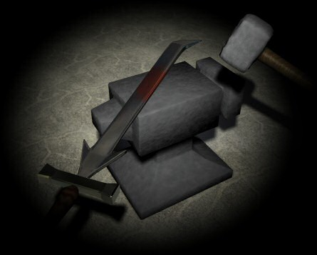

")
Issue 20 - Saradomin Answers Questions

Topics of note in this edition of the letters include a new look for Saradomin, a demon called Lemmy and how fairly Saradomin treats both members and free-players.
Salutations honoured followers, for I know many have missed my musings these months past. Rejoice once more, for Saradomin the wise is amongst you again!
I can tell from the number of queries I have received recently just how needy of my wisdom the average citizen today is! So with my usual grace and style I have allowed the lucky few responses to their questions.
And what questions you have asked this time!
You doubt the mighty Saradomin? Well let's have a little look at what has been sitting in the bottom of my mailbag begging to be answered by the wisest deity in RuneScape...
Dear mighty saradomin.
It has become known to me that there is a mysterious old man who appears and dissapears randomly it seems. however i have heard that he speaks to people and gives them things. i encountered him talking to someone. i tried to talk to him but he said "i am trying to talk to ........however he is ignoring me" he then dissapeared. i want to know the origin of this man. is he a god, wizard or a normal man. i would also like to know why he comes to people and gives him things.
thank you for your time.
Samuel c
There is a tale told in the taverns of a wizard who has been researching the mysteries of 'summoning' creatures from other dimensions with a mysterious type of rune that has not been seen before on this world.
The rumours have it, that he wanders the lands searching for feeble minded individuals who are of such low intellect that they cannot respond even directly to their own name being called so that he may practice his summoning and mind control methods upon them.
Those who appear to not have the wit to recognise their own name when spoken to, may find themselves transported to various locations as this wizard tries to master his 'summoning' technique, so that he can perfect the methods of distance travelled versus various sizes and weights of body mass. It is also of interest to this mage to see the reaction time of such individuals before they realise what has happened, again, to aid in his summoning experiments.
If those he query by name show themselves to be mentally sufficient of understanding, he dismisses them as a suitable test subject, and offers a gift to avoid suspicion of his activities, for he is working hard upon being able to summon and control creatures far more dangerous than feeble minded miners and woodcutters.
How true this tale is I cannot say, for I have never seen this mysterious man, but it certainly seems consistent with the reports of his appearance does it not?
Oh Benevolent Saradomin,
What is the etymology of your name?
Scholarly,
manunkind
Although I am sure Reldo could offer you an interesting theoretical treatise on my name, the truth is that it is merely my name.
Sometimes a name is just a name, it has no hidden meaning behind it - other than that it is a great and generous name for a great and generous god!
Referring to another question: "Why is the lesser Demon in wizard tower locked up?" Then you said, "My only reply is that it is because it would be extremely dangerous for the wizards if he was allowed to roam free." My question is then why is he there in the first place?
someone who doesn't follow the 'gods' and has too many accounts to name.
Hootiebean
Well, the wizards of the newly created Wizards' tower are great students of the magical arts, and the demon is simply a leftover from one of their many experimentations. I believe the original purpose of the experiment was to discover what exactly lesser demons are made of and why exactly all they leave behind when killed is a small heap of ash.
I do not know if they ever came up with an answer to that one, but I do know that the young mages who learn their skills at the tower have a great fondness for this demon, and have taken him on as a mascot of sorts. Although I do not condone the presence of such an evil fiend in my lands, or the captivity of a living animal for experimentation, it gladdens my heart to know that in some way this poor misguided creature has found some kind of rapport with the wizards as a mascot, instead of just trying to eat them.
I believe they call him 'Lemmy'.
Saradomin I want to know 1 thing what is a thingummywut and if it is real can u show a picture in you next letters show.
PS Don't change the subject like you do with other people and say i have bad grammer and stuff like that.
I never change the subject of the pleas of my followers, for all messages sent to me are by definition about me, and the glory of Saradomin is a subject which I can speak for hours upon and never get bored!
To answer your question, a thingummywut is a combination of a lack of vocabulary in a half-senile old man, and a lifetime of misunderstood paranoia.
It is the fear that cannot be named, yet nestles deep in his heart and has done for many years.
Traiborn, although a man both brave and pure, is still what is politely called a hamper short of a picnic.
do you not answer non-member people's questions???
Of course! I also frequently don't answer member's questions too! It is one of the ways by which I keep my mysterious nature and remain interesting!
O' mighty Saradomin,
I was wondering if you knew if the people who work at runescape kept at least one holiday item since they are the ones who drop them every holiday. I meen you are a god so you should know this.
Yaziyo
P.S. Do you know why the place with Zamorak monks has an altar, after all prayers are your work not Zamorak's.
I know that the greedy council have a warehouse filled with holiday items that they hold back from the public, and sell occasionally to boost their tax coffers - sometimes they use the high alchemy spell on them too in a perverse sense of mischief, knowing that if people knew they did such a thing they would be shocked.
I would think less of them, if I did not consider the pursuit of these holiday items in the first place such an empty materialistic practice.

Dear Saradomin,
I am a miner,smither,DRUID,monk,and wizard and ive been puzzling why are the furnaces and anvils so far away is there no place where they are in the same map?
Signed,
Gigamek
Yes, there is such a place which contains abundant ores, a furnace, and anvils all in the same underground cavern.
It is located on the land named 'Tutorial Island' and is populated daily by newcomers to this land.
Those desiring to combine the use of a furnace with proximity to anvils would be well advised to learn the spell known as 'superheat item'.
Dear Saradomin,
I have noticed that both Guthix and Zamorak have been given a new, 3-D appearance. I was wondering, what will you look like in our upcoming 3-D world?
Please send us a picture in your next response...
I have the same appearance that I have always had, for I am Saradomin the unchanging wisdom. You can find a better representation of my glorious visage at the beginning of this letters page however! May all who see my glory follow my path!
Hello great god Saradomin,
This is a faithful follower, WolfhunterXZ.
I have but one simple easy question to ask of thee, what city is larger in size, Varrock or Ardougne? That is the question that has been bothering me since I looked at the map of the world.
Thank you for thee time oh powerful one.
Your loyal follower,
WolfhunterXZ
An interesting query, and one that is difficult to answer without certain definitons.
Do the Palaces count as part of the cities?
Do you base size upon the number of buildings?
Or the population?
Or the general size of the area?
I could certainly answer your question, you just need to ask it correctly... such is the way of the wise. The answer to the question is not as important as the question that is asked. Learn this lesson well, for it shall prove valuable.
dear almighty saradomin
i have been wondering for some time why runescape does not have a place were people can display there artwork of this wonderful world or there freinds. will there ever be a place like i speek of? please let me know soon.
lewis800

I, and indeed all of the gods, have a love and appreciation for artwork of all kinds - witness the number of statues of myself scattered around my lands! If those of you who are gifted with the arts of art and design wish to send their work to myself or any of the other deities it will certainly be considered for publication within these letters pages, and if we see enough high quality artwork we may even consider a gallery such as you speak of.
Pictures of myself in all of my glory are particularly artistic in my view!
Hi
I really don't care who answers this but I would like Saradomin (Guthix is too ambiguous and Zamorak is too sarcastic - now I bet Z will pick this up and make fun of me somehow). Anyway, I have played for a while and now I'm interested in becoming a member.
1)If I subscribe, will I go back to the lowest skill levels and have to start again?
2)Will I keep all of my current items?
3)If I unsubscribe after that, will I keep the things I pick up in the member's servers, and will all the quests I complete and the skills I gain lvls in -- member's and non-member's -- (and other similar concepts) continue to be recorded as such?
Thanks,
Dinghis
You have certainly made the right decision in addressing your query, for benevolent Saradomin will be happy to answer thy queries!
1) No, if you choose to use your existing character then when your membership begins you will find yourself exactly as you had left yourself, only with the added bonus that you are then free to wander into the mysterious new lands open to you, and begin the skills that you have never seen before.
2) So too will your bank be intact, as you left it, you will just have access to a larger vault of deposit to accomodate the extra items and garments that you will no doubt find and acquire upon your travels.
3) If you choose to cease paying the council tithe for the members lands, then you will be returned to the free lands, and any items you have gained that are not allowed in the free lands will still be present upon you, but they will be labelled as members items and you will not be able to use them.
Any skills you have gained in your travels through the members lands will remain as they were before your membership was cancelled, but you will not be able to use the members only skills at all in the free lands.
I hope my answers have been satisfactory to you, yet if you require more of my wisdom you may always query me for a future letters page.
And so the shadows draw long upon the walls, as the candle dims and the day softly ends. It is now time that I leave this plane once more, hopefully in the knowledge that I have spread my light amongst your hearts and minds, and kept the coldness from your souls from entering.
Fret not my devout followers, for I shall return soon, as my tasks to bring wisdom to the questioning is eternal, and I still have much work before I may rest. I will see you all soon once more, but until then remember the spark of goodness in all of your hearts that calls itself Saradomin...
Until next time,
Strength through wisdom,
Saradomin
DISCLAIMER: The views of Saradomin do not reflect the views of Jagex Ltd or it's employees. We tried to stop him saying anything controversial, but he is a god.

More articles in
God letters
|
|